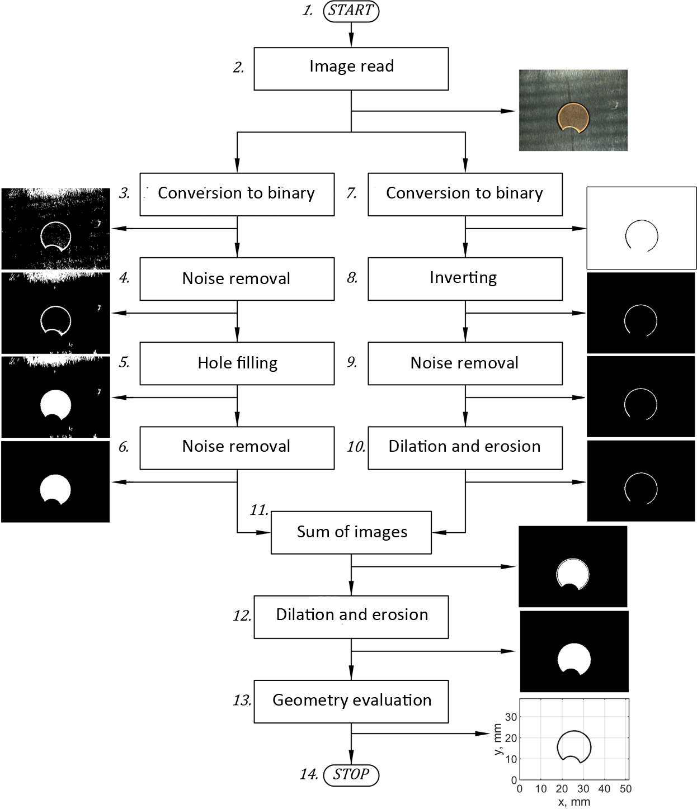

Image processing algorithm for evaluation of the roundness of small objects
Used tools and packages
Matlab Image Processing Toolbox Optimization ToolboxIntroduction
This was the part of larger project in which team under my lead was responsible for the design of a system for automatic control of small object – copper seals for fuel and gas installations. In the designed automatic control system machine vision was used among others to evaluate the roundness of manufactured sealings and their prefabricated material.
Methods
To overcome the lightning problems resulting from shaded rounded edges the two-way algorithm based on image segmentation was proposed:
The algorithm starts by reading the captured image (2). Next, it is converted to a binary image with the aid of a threshold value greater than that obtained by Otsu’s method (3). After noise removal (4) empty spaces are filled by morphological operations (5). Another step is to remove noise once again (6). The original image is again converted to binary however the value of the threshold is here less than obtained by Otsu’s method (7). Next, it is inverted (8), noise is removed (9), dilated and eroded (10). Such images are then summed (11), dilated and eroded (12). These operations are responsible for hole filling and smoothing the edge which represents the profile of the measured object. The boundary of the obtained area after scaling can be exported as a set of points xi, yi (where i=1,2,…,n) for further roundness evaluation. In this purpose, measured points are approximated by a circle obtained in the least square sense. It reduces to an optimization problem in the form:
where fi(a)=(xi-a2)2+(yi-a2)2-a32 is an error function, a={a1, a2, a3} is a vector of a parameters of searched circle, while a1, a2 are coordinates of the center, and a3 is its radius. The solution can be found numerically by „trust-region” or “Levenberg- Marquardt” algorithms. Roundness error is therefore obtained as the difference between the maximum and minimum distance of measured points from the center of circle:
Results
Summary
- Image processing time allowed for quick inspection (2 parts per second).
- Machine vision system components were properly chosen.